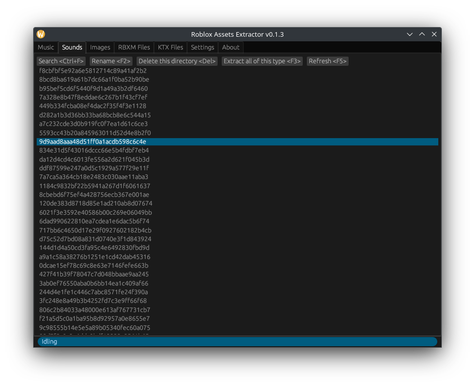

Roblox Assets Extractor makes it easy to extract assets from your Roblox cache. It does not interact with your Roblox client in any way, making this an anti-cheat friendly way of extracting assets.
Note: To run this on Windows, you will need Microsoft Visual C++ Redistributable
Still not working? Check the FAQ below

The program can't run because VCRUNTIME140.dll is missing
Install Microsoft Visual C++ Redistributable
Does this interfere with the roblox client?
No, it is opening files that your client has already created. You can see them yourself in %Temp%\Roblox
Is this malware?
No, this is not malware, similar to other Free and Open Source Software, the code is available for everyone to see. It would be impossible for us to hide malware in here. The builds are also safe as the builds are now created by GitHub actions meaning everything is fully transparent. If you still don't trust this software, you can use the web demo at https://aeen123.github.io/Roblox-assets-extractor/demo (you don't need to download anything for that)
Windows says "Windows protected your PC" What do I do?
If Windows detects a program from an unverified publisher, this popup will appear. If this popup does appear, click "More info" and click "Run anyway".
Can this get me banned?
No, unlike cheats, this does not inject into roblox. Making this an anti-cheat friendly way of extracting assets.
My extracted assets don’t play in my media player, what can I do?
Some media players may not support the format that the file is in. If that is the case, please try another media player that supports all of the formats this supports, e.g VLC. If the file is really broken, please create an issue.
Why is KTX files in a different tab? Shouldn't it be in the Textures tab?
Technically it should, but most image viewers don't support KTX files, so it is best to move this aside to a different tab to avoid compatibility issues, this tab should be used for more advanced users.
Does this take up storage overtime?
Your Roblox cache itself does take up storage overtime, this tool itself does not add any storage use overtime unless you are extracting many files overtime, which you can delete easily.